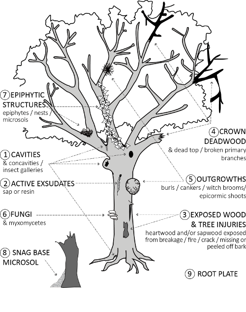

Pour des BDD partagées et pérennes
- Machine virtuelle hébergée et sauvegardée sur le datacenter
- Logiciel PostgreSQL
- Accessible à tous : 147.100.166.41
- Moyennant une authentification.
Wilfried Heintz
UMR 1201 Dynafor, INRA, Toulouse

Ergonomie limitée ...
Procédure d'authentification moins "immédiate"
Ergonomie et fonctionnalités améliorées
shp2pgsql
shp2pgsql -s SRID myshapefile.shp myschema.mytable > myfile.sql
ogr2ogr
ogr2ogr -f 'PostgreSQL' PG:'host=myhost user=myloginname dbname=mydbname password=mypassword' myshapefile.shp

Peut se connecter à une base pour afficher/éditer des données géographiques
Ergonomie et fonctionnalités améliorées

Peut se connecter à une base pour afficher/éditer des données géographiques
Nécessite l'extension PostgreSQL Client Libraries

2 éditées "en direct" par des agents Dynafor
=> N'hésitez plus à convertir vos données !

4 tables référentielles (arbre,manip,espèce,genre)
Interface Internet + Pi